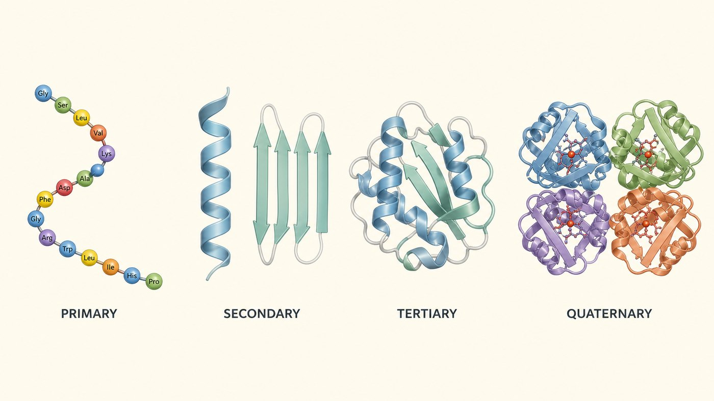
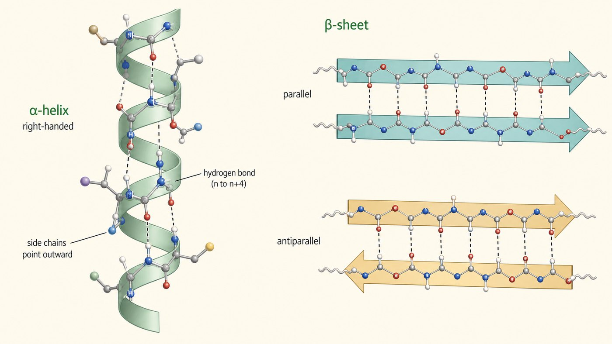

第 4 週
Cấu trúc protein
Nối tiếp tuần trước
→ 主鏈只能在特定角度轉 → 所以只做得出 α螺旋 和 β摺板
Liên kết peptide phẳng → chỉ tạo được xoắn α và gấp nếp β
→ 被水擠進蛋白質內部 → 這就是三級結構的成因
Mạch bên kỵ nước bị đẩy vào trong → cấu trúc bậc 3
胜肽鍵是平面結構(第 3 週)。
側鏈分成四大類(第 3 週)。
Kiến thức cũ dùng hôm nay
上週講「零件」。這週講「零件怎麼變成機器」。
Từ vựng · 不用背,看過就好
| 中文 | Tiếng Việt | English | 中文 | Tiếng Việt | English |
|---|---|---|---|---|---|
| 一級結構 | Cấu trúc bậc một | Primary | 摺疊 | Sự cuộn gập | Folding |
| 二級結構 | Cấu trúc bậc hai | Secondary | 變性 | Sự biến tính | Denaturation |
| 三級結構 | Cấu trúc bậc ba | Tertiary | 次單元 | Tiểu đơn vị | Subunit |
| 四級結構 | Cấu trúc bậc bốn | Quaternary | 伴護蛋白 | Chaperone | Chaperone |
| α螺旋 | Xoắn alpha | Alpha helix | 球狀蛋白 | Protein dạng cầu | Globular |
| β摺板 | Gấp nếp beta | Beta sheet | 膠原蛋白 | Collagen | Collagen |
越南語用序數:bậc một / hai / ba / bốn。中文用「一二三四級」。
4 bậc cấu trúc

像蓋房子:磚→牆→房間→大樓。
Như xây nhà: gạch → tường → phòng → tòa nhà.
4 bậc
| 層級 | 是什麼 | 例子 | 靠什麼維持 |
|---|---|---|---|
| 一級 Bậc 1 |
胺基酸的順序 | Gly-Ala-Val-… | 胜肽鍵(共價) |
| 二級 Bậc 2 |
局部的規則形狀 | α螺旋、β摺板 | 主鏈氫鍵 |
| 三級 Bậc 3 |
一條鏈的立體形狀 | 球狀 | 疏水作用、雙硫鍵 |
| 四級 Bậc 4 |
很多條鏈組合 | 血紅素(4 條) | 鏈與鏈之間 |
Lỗi thường gặp nhất
只到三級。
Myoglobin: 1 chuỗi → bậc 3
有四級。
Hemoglobin: 4 chuỗi → bậc 4
Cấu trúc bậc hai

α螺旋:像彈簧、像樓梯。 | β摺板:像摺紙、像百褶裙。
So sánh
| α螺旋 Xoắn α | β摺板 Gấp nếp β | |
|---|---|---|
| 形狀 | 像彈簧 | 像摺紙 |
| 氫鍵在哪 | 同一條鏈裡(n 與 n+4) | 股與股之間 |
| 側鏈朝哪 | 朝外 | 上下交替 |
| 例子 | 角蛋白(頭髮) | 絲蛋白(蠶絲) |
兩個都靠「主鏈」氫鍵,不是側鏈。
Phân công
只靠主鏈的 C=O 和 N—H。
跟側鏈是什麼無關。
Bậc 2: chỉ nhờ mạch chính.
側鏈才出場。
疏水的躲進去。
Bậc 3: mạch bên mới xuất hiện.
Vì sao gấp thành hình đó?
非極性側鏈。
疏水核心。
Bên trong: lõi kỵ nước
極性、帶電側鏈。
碰水。
Bề mặt: phân cực, tiếp xúc nước
這是疏水效應第 3 次出現。前兩次:第 2 週水、第 3 週側鏈。第 10 週細胞膜還有一次。
Sự biến tính
透明的液體。
Lòng trắng sống: lỏng, trong
白色固體。回不去了。
Đã chiên: trắng, cứng, không hồi lại
最好的例子:煎蛋。
Cái gì gây biến tính?
| 原因 | 做了什麼 | 例子 |
|---|---|---|
| 加熱 | 打斷弱作用力 | 煎蛋、發燒 |
| 極端 pH | 改變側鏈電荷 | 胃酸消化蛋白質 |
| 尿素、有機溶劑 | 破壞疏水核心 | 實驗室常用 |
注意:全部都是弱作用力。 Chú ý: đều là tương tác yếu.
Cấu trúc bậc 1 không hỏng
二、三、四級。
弱作用力被打斷。
Bậc 2, 3, 4 hỏng.
一級。
胜肽鍵是共價鍵。
Bậc 1 còn — liên kết peptide còn.
2 loại protein
長條的。做結構用。
膠原蛋白(皮膚、骨頭)
角蛋白(頭髮、指甲)
Protein dạng sợi — cấu trúc
圓的。做事情用。
酵素、血紅素、抗體
Protein dạng cầu — chức năng
下週的肌紅素和血紅素。都是球狀蛋白。
Bài tập: Nối cột
一級結構
二級結構
三級結構
四級結構
把上面和下面配對。 Nối hàng trên với hàng dưới.
Bài tập: Đúng hay sai
一條多肽鏈摺疊完成後。就有四級結構。
α螺旋靠側鏈的氫鍵維持。
煎蛋時。蛋白質的胜肽鍵被打斷了。
非極性側鏈躲在哪?通常在蛋白質內部。
想一想:為什麼發高燒很危險?(提示:酵素是蛋白質)
下週 · Tuần sau
Chức năng protein: myoglobin và hemoglobin
▶ 課前:看詞彙表第 5 週(15 個詞)
Xem trước 15 từ của tuần 5
▶ 小測:下週前 10 分鐘,考今天的詞
Kiểm tra 5 câu, 10 phút đầu giờ
▶ 提示:下週正好比較 1 條鏈 vs 4 條鏈
Gợi ý: 1 chuỗi vs 4 chuỗi — bậc 3 vs bậc 4